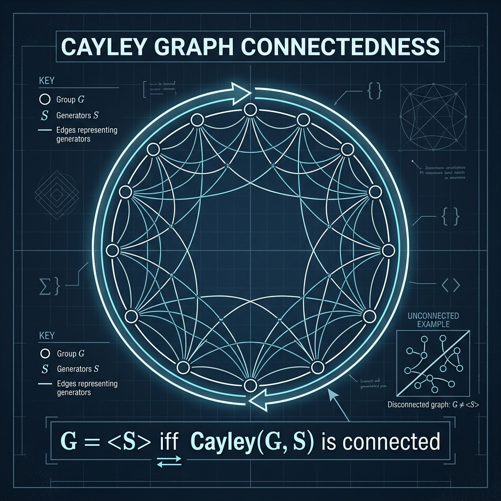

Connectedness of Cayley Graphs

Mathematical Exposition
In algebraic graph theory, a Cayley graph is a graph that encodes the algebraic structure of a group. Let $G$ be a group, and let $S \subseteq G$ be a set of group elements. The (multiplication) Cayley graph $\text{Cayley}(G, S)$ is a graph where the vertices are the elements of $G$, and an edge connects $x, y \in G$ if $x^{-1}y \in S$ or $y^{-1}x \in S$.
A fundamental property of Cayley graphs is that their topological connectedness is equivalent to the algebraic generation of the group. That is, the graph is connected if and only if $S$ generates $G$ (meaning every element in $G$ can be written as a finite product of elements in $S$ and their inverses, i.e., $\langle S \rangle = G$).
Algebraic vs. Topological Equivalence
To prove the theorem, we establish the two implications:
- Connectedness $\implies$ Subgroup Generation: If the Cayley graph is connected, there exists a path between the identity element $1$ and any element $g \in G$. A path in a Cayley graph is a sequence of vertices $x_0 = 1, x_1, \dots, x_k = g$ where each transition $x_i \to x_{i+1}$ represents multiplication by a generator $s_i \in S$ or its inverse. Thus: $$g = x_k = s_1^{\pm 1} s_2^{\pm 1} \dots s_k^{\pm 1}$$ which proves that $g$ belongs to the subgroup closure $\langle S \rangle$, forcing $\langle S \rangle = G$.
- Subgroup Generation $\implies$ Connectedness: If $\langle S \rangle = G$, then for any element $g$, $g$ can be written as a product of elements of $S$. This product defines a path from $1$ to $g$ in the Cayley graph, proving that $1$ is reachable from any element. By transitivity of reachability, any two elements $u, v \in G$ are connected via $1$ ($u \to 1 \to v$), establishing that the graph is connected.
Lean 4 Formalization
Our formalization represents the Cayley graph using Mathlib's `SimpleGraph` API. The path reachability is formalized using reflexive-transitive closures (`Relation.ReflTransGen`), and group generation uses `Subgroup.closure`. The left-multiplication invariance of reachability is proven as a helper lemma (`Reachable_mul_left`) to perform induction over path steps.
import Mathlib
namespace Submission
lemma Reachable_mul_left {G : Type*} [Group G] {S : Set G} {a x y : G}
(h : (SimpleGraph.mulCayley S).Reachable x y) :
(SimpleGraph.mulCayley S).Reachable (a * x) (a * y) := by
rw [SimpleGraph.reachable_iff_reflTransGen] at h ⊢
induction h with
| refl => exact Relation.ReflTransGen.refl
| tail h_path h_adj ih =>
rename_i y' y
apply Relation.ReflTransGen.tail ih
rw [SimpleGraph.mulCayley_adj] at h_adj ⊢
rcases h_adj with ⟨hne, hS⟩
constructor
· exact fun h_eq => hne (mul_left_cancel h_eq)
· rcases hS with hS1 | hS2
· left
have h_eq : (a * y')⁻¹ * (a * y) = y'⁻¹ * y := by group
rw [h_eq]
exact hS1
· right
have h_eq : (a * y)⁻¹ * (a * y') = y⁻¹ * y' := by group
rw [h_eq]
exact hS2
theorem mulCayley_connected_iff_closure_eq_top {G : Type*} [Group G]
(S : Set G) :
(SimpleGraph.mulCayley S).Connected ↔ Subgroup.closure S = ⊤ := by
constructor
· intro h
rw [Subgroup.eq_top_iff']
intro g
have h_reach : (SimpleGraph.mulCayley S).Reachable 1 g := (h.preconnected 1 g)
rw [SimpleGraph.reachable_iff_reflTransGen] at h_reach
induction h_reach with
| refl => exact Subgroup.one_mem _
| tail h_path h_adj ih =>
rename_i y' y
rw [SimpleGraph.mulCayley_adj] at h_adj
rcases h_adj.2 with hS | hS
· have : y = y' * (y'⁻¹ * y) := mul_inv_cancel_left y' y |>.symm
rw [this]
exact Subgroup.mul_mem (Subgroup.closure S) ih (Subgroup.subset_closure hS)
· have : y = y' * (y⁻¹ * y')⁻¹ := by group
rw [this]
apply Subgroup.mul_mem (Subgroup.closure S) ih
apply Subgroup.inv_mem (Subgroup.closure S)
exact Subgroup.subset_closure hS
· intro h
refine ⟨fun u v => ?_⟩
have h_reach_one : ∀ g, (SimpleGraph.mulCayley S).Reachable 1 g := by
intro g
have hg : g ∈ Subgroup.closure S := by rw [h]; exact Subgroup.mem_top g
induction hg using Subgroup.closure_induction with
| mem x hx =>
by_cases hx1 : x = 1
· subst hx1; exact SimpleGraph.Reachable.refl 1
· apply SimpleGraph.Adj.reachable
rw [SimpleGraph.mulCayley_adj]
exact ⟨Ne.symm hx1, Or.inl (by simp [hx])⟩
| one => exact SimpleGraph.Reachable.refl 1
| mul x y _ _ ihx ihy =>
have h_trans : (SimpleGraph.mulCayley S).Reachable x (x * y) := by
have h_mul := Reachable_mul_left (a := x) ihy
rw [mul_one] at h_mul
exact h_mul
exact ihx.trans h_trans
| inv x _ ihx =>
have h_inv : (SimpleGraph.mulCayley S).Reachable 1 x⁻¹ := by
have h_mul := Reachable_mul_left (a := x⁻¹) ihx
rw [inv_mul_cancel, mul_one] at h_mul
exact h_mul.symm
exact h_inv
exact (h_reach_one u).symm.trans (h_reach_one v)
end Submission